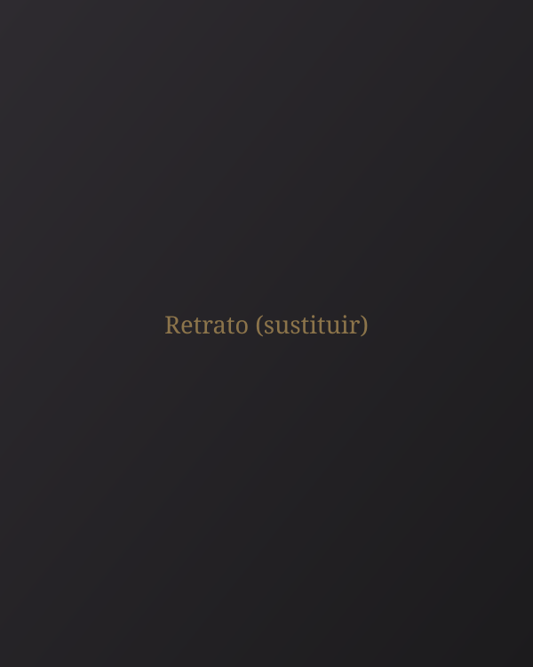

Sobre mí

Soy Manu Sánchez, fotógrafo cofrade de Jerez de la Frontera.
Mi trabajo está centrado en documentar la Semana Santa, las hermandades y las distintas manifestaciones de religiosidad popular mediante la fotografía.
Aquí iré reuniendo, galería a galería, el archivo de mi trabajo.
Ver galerías